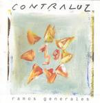

| Artist: | Contraluz |
| Title: | Ramos Generales |
| Label: | self produced |
| Length(s): | 73 minutes |
| Year(s) of release: | 2003 |
| Month of review: | [03/2005] |
| 1) | Surge | 8.16 |
| 2) | El Regreso Del Hijo Prodigo | 7.01 |
| 3) | Vuela Viento | 7.28 |
| 4) | Llevo...A Mi Padre | 11.03 |
| 5) | Toribio El Pintor | 5.36 |
| 6) | El Abismo | 7.45 |
| 7) | Vida En El Desierto | 13.01 |
| 8) | Aconcagua | 6.00 |
| 9) | El Despertar De La Bestia | 7.39 |
El Regreso Del Hijo Prodigo is quite a bit more distinctive. There is something of the Who in there, but also seventies guitar progressive (think Akkerman), with a warm organ feel and plenty of percussive elements. Solo and harmony vocals alternate, although the instrumental section forms the gist of this tune. The vocals do offer the melodic resting point. The transitions between the various parts are well-placed, although they don't always proceed fluently. The ELP styled synths come back in too. The style does seem to ask for a more abundant, voluminous playing. The production however does not allow it. I mean the album is well-engineered and all, but there could be more dynamics in the volume, more speed in the speedy parts. But that could just be what I would prefer.
Vuela Viento opens relatively quietly, with rather subtle vocal lines, a jazzy sounding piano and a bit of accordeon. This is all in all a rather sugary tunes, with some real saxophone thrown in. With the acoustic opening of the first 10+ minute song, Llevo...A Mi Padre, we continue the soft line. Halfway do we some more activity, with rather straightforward, slow-paced keyboards. I would have hoped for a bit more rock and volume again here. That piece of rock comes in later when the Tull styled flute sets in again. The guitar shows itself a bit more as well, and the drums are loud and rumbling.
Toribio El Pintor is with over five minutes the shortest of the nine songs. Again, the flute is very much in evidence as is the tinkling piano. On the whole the same kind of story as before, keeping it all rather subdued and a bit sad. El Abismo brings back in the accordeon, this time accompanying the bass? The plodding rock does set in quite soon this time, with a bit groove thrown in, even. A rare guitar solo follows, followed by the keyboards doing their bit. The end comes close to being euphoric.
Vida En El Desierto is the longest tune on the album. The guitar sound smells of the seventies, with a bit of Focus/Akkerman in there. Not surprisingly, it is full of variety, keyboard parts, bluesy interludes in the tense style of Pink Floyd, thoughtful bass playing, not forgetting the warm vocal passages that we have grown used to.
Aconcagua brings us friendly acoustic guitar, but on the whole not very striking. The closer El Despertar De La Bestia is, howver. After a somber, droning opening we run into up-beat Tullian flute playing some nice melodic material. It is followed by a symphonic guitar solo and ELPish synth outings. The keyboards continue to sound a bit dated. The final theme is really good, and my feeling is that they could have done a bit more there. The church organ is also a nice touch.